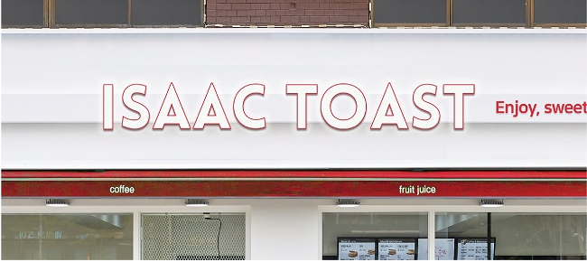
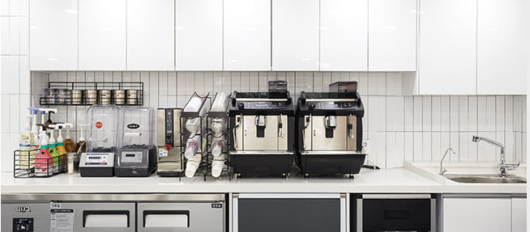
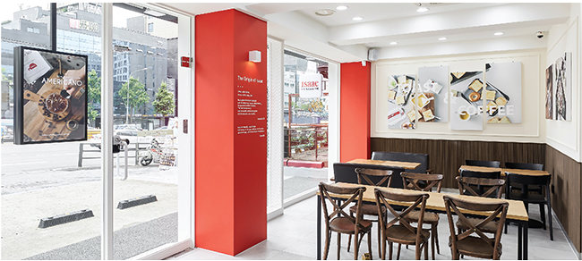
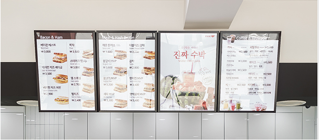
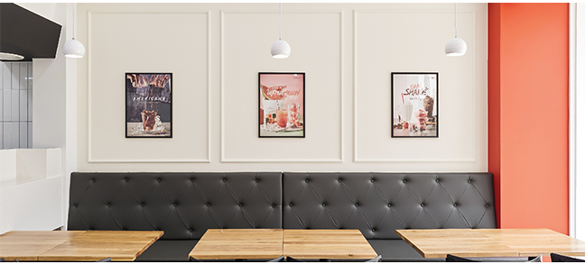

2018 ISAAC INTERIOR
White, Red, Wood 색상을 사용하여 깔끔하고 편안한 분위기를 전달하고, 고객의 시선을 끄는 캔버스 액자와
Wains coating을 사용하여 Toast와 Coffee를 함께 즐길 수 있는 여유로운 공간을 연출합니다.
|  |
간판
WHITE 파사드에 브랜드 시그니쳐 컬러인 |
|  |
오픈키친
즉석 조기를 보여줄 수 있는 오픈키친으로 |
|  |
객석
WOOD & IVORY 컬러로 따뜻하고 편안한 분위기를 제공 |
|  |
메뉴보드
LED 조명 메뉴보드로 밝고 생동감 있는 이미지를 전달 |
|  |
홍보물
WAINS COATING 벽면에 깔끔한 액자 형태의 |